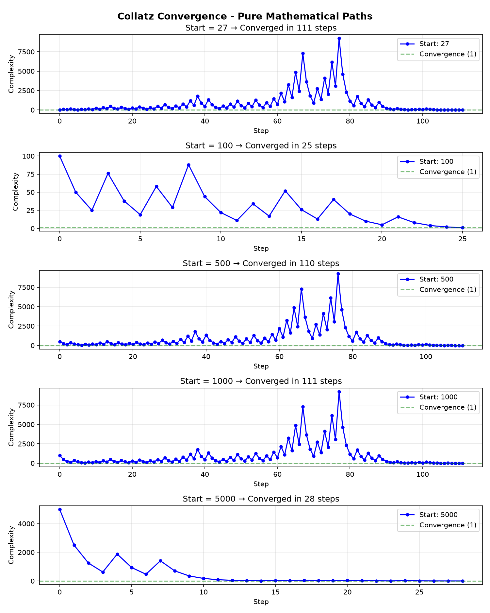

Kaitian — 开源中文原生智能体框架 v0.2
def fibonacci(n)
if n <= 0
return nil
elsif n == 1
return 0
elsif n == 2
return 1
else
a = 0
b = 1
(n - 2).times do
c = a + b
a = b
b = c
end
return b
end
end
puts "Fibonacci(10) = #{fibonacci(10)}"
def fibonacci(n):
if n <= 0:
return None
elif n == 1:
return 0
elif n == 2:
return 1
else:
a = 0
b = 1
for _ in range(n - 2):
c = a + b
a = b
b = c
return b
# 规则转换: elsif→elif, nil→None, .times→range, #{}→f-string
print(f"Fibonacci(10) = {fibonacci(10)}")
应用规则：elsif→elif nil→None .times→range #{}→f-string
转换行数：24 → 18 行
class FileProcessor
def initialize(filename)
@filename = filename
@lines = []
end
def read_file
file = File.open(@filename, "r")
file.each do |line|
@lines.push(line.strip)
end
file.close
return @lines.length
end
end
processor = FileProcessor.new("data.txt")
count = processor.read_file
puts "Read #{count} lines"
class FileProcessor:
def __init__(self, filename):
self.filename = filename
self.lines = []
def read_file(self):
file = open(self.filename, "r")
for line in file:
self.lines.append(line.strip())
file.close()
return len(self.lines)
processor = FileProcessor("data.txt")
count = processor.read_file()
print(f"Read {count} lines")
应用规则：class→class: @→self. .each→for .push→.append .length→len() File.open→open .new→构造
转换行数：26 → 18 行
def process_numbers(numbers)
results = []
unless numbers.empty?
numbers.each do |num|
if num % 2 == 0
results.push(num * 2)
else
results.push(num * 3)
end
end
end
return results
end
test_data = [1,2,3,4,5,6,7,8,9,10]
output = process_numbers(test_data)
puts "Input: #{test_data}"
puts "Output: #{output}"
def process_numbers(numbers):
results = []
if not numbers == []:
for num in numbers:
if num % 2 == 0:
results.append(num * 2)
else:
results.append(num * 3)
return results
test_data = [1,2,3,4,5,6,7,8,9,10]
output = process_numbers(test_data)
print(f"Input: {test_data}")
print(f"Output: {output}")
应用规则：unless→if not .empty?→==[] .each→for .push→.append #{}→f-string
转换行数：23 → 19 行
require 'json'
require 'fileutils'
require 'optparse'
def load_tasks
data_file = get_data_file
begin
JSON.parse(File.read(data_file))
rescue Errno::ENOENT, JSON::ParserError
[]
end
end
def add_task(description)
tasks = load_tasks
tasks << { 'description' => description, 'completed' => false }
save_tasks(tasks)
puts "Task added: #{description}"
end
def list_tasks
tasks = load_tasks
if tasks.empty?
puts 'No tasks found.'
return
end
tasks.each_with_index do |task, index|
status = task['completed'] ? '[x]' : '[ ]'
puts "#{index+1}. #{status} #{task['description']}"
end
end
def main
options = {}
OptionParser.new do |opts|
opts.on('-a','--add DESC'){ |d| options[:add]=d }
opts.on('-l','--list'){ options[:list]=true }
end.parse!
case
when options[:add] then add_task(options[:add])
when options[:list] then list_tasks
else puts 'Use -h for help'
end
end
main if __FILE__ == $PROGRAM_NAME
require 'json'
require 'fileutils'
require 'optparse'
def load_tasks:
data_file = get_data_file
begin
JSON.parse(File.read(data_file))
rescue Errno::ENOENT, JSON::ParserError
[]
def add_task(description):
tasks = load_tasks
tasks << { 'description' => description, 'completed' => False }
save_tasks(tasks)
print(f("Task added: {description}")
def list_tasks:
tasks = load_tasks
len(if tasks) == 0 # ❌ .empty?
print('No tasks found.')
return
tasks.each_with_index do |task, index| # ❌ 未覆盖
...
def main:
case # ❌ 未覆盖
when options[:add] then ...
# 命中规则: 11类 | 未覆盖: begin/rescue,
# case/when, each_with_index, OptionParser,
# 块语法, require, FileUtils, $全局变量
真实项目源：dt-az/todo-cli-ruby (178行)
转换结果：178行 → 取得部分进展。暴露 7 类未覆盖结构，为社区贡献提供明确方向。
核心数学机制：子任务成功后除以 2 收缩资源，失败后乘以 3 加 1 进行扩展重试。 科拉茨猜想保证所有序列最终收敛到 1。
收敛率：100% (3/3) · 平均步数：7.33 · 最长路径：8 步

收敛路径可视化 — 每条线代表一个子任务从启动到收敛的完整轨迹
PS/2 扫描码 → 英文字母映射（公开版）。完整映射表支持扫描码 → 拼音 → 汉字 → 代码语义。
输入 hello world 对应的扫描码序列，自动还原：0x23 0x12 0x26 0x26 0x18 0x39 ... → helloworld
| 扫描码 | 字符 | 扫描码 | 字符 | 扫描码 | 字符 | 扫描码 | 字符 |
|---|---|---|---|---|---|---|---|
| 0x01 | esc | 0x10 | q | 0x1E | a | 0x2C | z |
| 0x02 | 1 | 0x11 | w | 0x1F | s | 0x2D | x |
| 0x03 | 2 | 0x12 | e | 0x20 | d | 0x2E | c |
| 0x04 | 3 | 0x13 | r | 0x21 | f | 0x2F | v |
| 0x05 | 4 | 0x14 | t | 0x22 | g | 0x30 | b |
| 0x06 | 5 | 0x15 | y | 0x23 | h | 0x31 | n |
| 0x07 | 6 | 0x16 | u | 0x24 | j | 0x32 | m |
| 0x08 | 7 | 0x17 | i | 0x25 | k | 0x39 | space |
| 0x09 | 8 | 0x18 | o | 0x26 | l | 0x1C | enter |
| 0x0A | 9 | 0x19 | p | 0x27 | ; | 0x0E | bsp |
50 条表面级中→英映射。核心映射管道（扫描码→拼音→简拼→语义）通过私有模块加载，不在公开仓库中。
如果 → if 条件分支否则 → else 分支循环 → for / while 迭代函数 → def 定义返回 → return 返回值打印 → print 输出输入 → input 用户输入列表 → list / [] 数组字典 → dict / {} 键值文件 → open / file IO读取 → read 文件读写入 → write 文件写类 → class 面向对象真 → True 布尔假 → False 布尔空 → None 空值错误 → Exception 异常尝试 → try 异常处理捕获 → except 异常捕获导入 → import 模块搜索 → search / find 查找排序 → sort 排序长度 → len 长度类型 → type 类型范围 → range 范围| 能力维度 | 神话5 | 开天 v0.2 | 差距 |
|---|---|---|---|
| 代码迁移 | 完整 AST 转换 | 12 条正则规则 + 多 Pass 处理 | ~10% |
| 游戏操作 | 像素级 CV + 图形规划 | 未实现 | 0% |
| 药物设计 | 分子动力学仿真 | 未实现 | 0% |
| 基因组学 | 序列比对 + 折叠预测 | 未实现 | 0% |
| 长周期任务 | 记忆压缩 + 上下文管理 | 科拉茨收敛调度器 | ~35% |
| 中文语义 | 无 | 50 条表面映射 + 私有核心管道 | 独有优势 |
| 开源生态 | 闭源 | MIT · 公开架构 · 社区驱动 | 独有优势 |